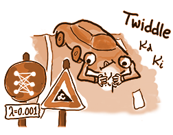
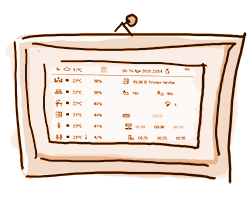
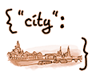

Cool Creative Projects I Worked On
-
Self Driving Car Engineer Nanodegree
Experience and Projects at Udacity Courses and my Journey to Become a Self Driving Car Engineer See Slideshow -
Quietpaper - IoT Smart Home Project
Raspberry-Pi-based E-Paper Display to show room climate, public transport, laundry devices, calendars and more Github + Docs Download -
Visualize E-Mobility Battery Performance Using D3.js
Going Beyond the Data Analyst Nanodegree Project with some Real-World Automotive Data Github + Docs Download - Detect Fraud at Enron with Machine Learning Github Download
- Explore & Summarize Data of Wine Quality with R Github Download
- Wrangle Open Street Maps Data from Dresden Github Download
- Analyze New York City Subway & Weather Data Github Download
-
 Enterprise 2.0: Social Software in Corporations
Course taught in 2013 and 2014 at Esslingen University of Applied Sciences
Enterprise 2.0: Social Software in Corporations
Course taught in 2013 and 2014 at Esslingen University of Applied Sciences
-
 Search Engine Prototype for Car Dealerships
Master Thesis "Semantic Federation of Heterogenous Data Sources in Automotive Diagnostics"
Search Engine Prototype for Car Dealerships
Master Thesis "Semantic Federation of Heterogenous Data Sources in Automotive Diagnostics"
-
Android App for Location Based Picture Sharing
Bachelor Thesis "XMPP-based Media Sharing for Mobile Collaboration with Android Phones"
- More from pre-2010...